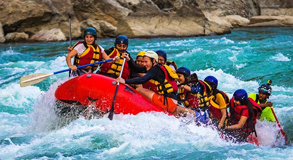
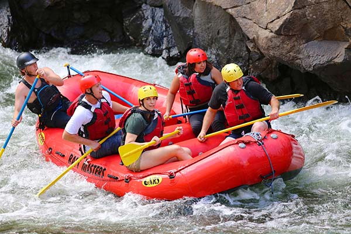
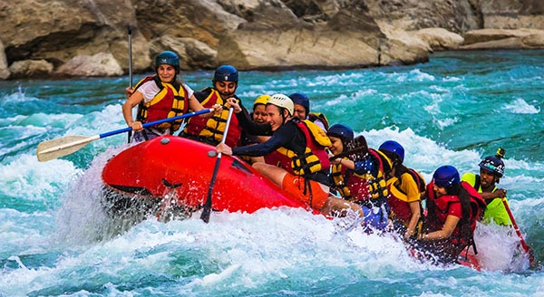
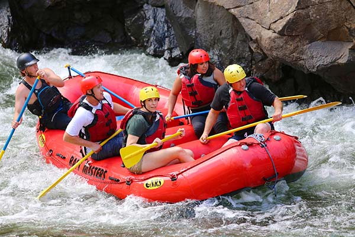
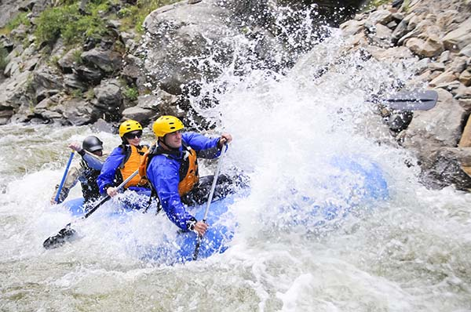
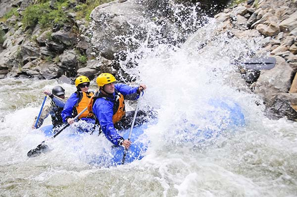

To deliver high-octane splash adventures powered by banana-fueled team spirit and rubber duck wisdom.

Charity Whitewater Tours
History
Charity Whitewater Tours was founded in the early 2000s by a group of adventure-loving locals, Cagayan de Oro began with a single raft and a big dream — to turn the mighty Cagayan River into the ultimate playground. What started as weekend trips for friends quickly grew into one of the city's top eco-tourism attractions. Today, we guide thousands of thrill-seekers each year, proudly sharing the river's rush and the spirit of Mindanao.
Adventure Awaits You!
 



 
